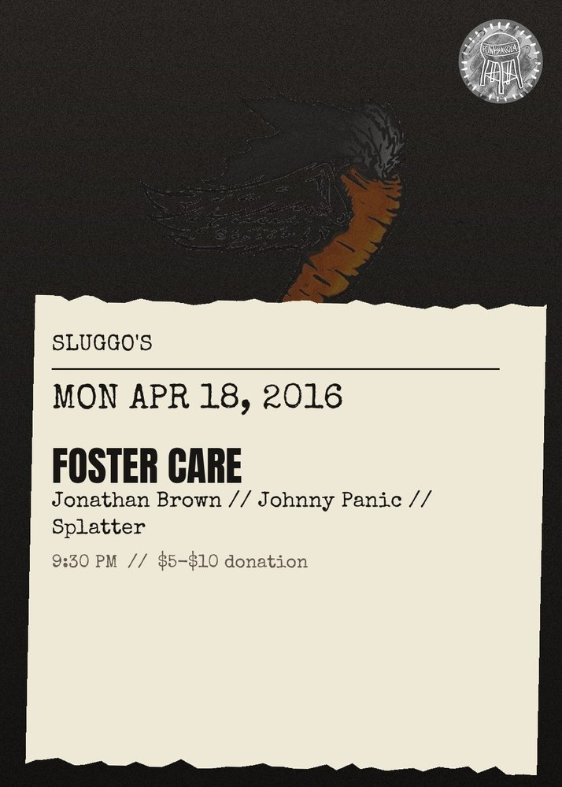

MON APR 18from the archive
Foster Care, Jonathan Brown, Johnny Panic, Splatter
9:30 PM
$5-$10 donation
all ages
All Ages, All The Time, $5-10 Donation\n\nFoster Care (Brooklyn)\nhttps:\/\/soundcloud.com\/jkshk\/foster-care-i-never-meant-to\n\nJonathan Brown (New Orleans)\nhttps:\/\/soundcloud.com\/jonathanbrownmusic\n\nSplatter\n\nJohnny Panic\nhttps:\/\/johnnypanichiphop.bandcamp.com\/